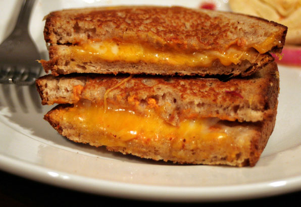

Home
Grilled Cheese Sandwich

Descripción
Hoy hace frío en Madrid y no ha salido el sol en todo el día. Sería facil deprimirte… pero si tienes queso, pan, y mantequilla, no hay porque! En solo 20 minutos puedes hacerte un auténtico grilled cheese americano para olvidarte del frío y pensar solo en lo bueno que está el queso fundido!
El famoso grilled cheese sandwich es basicamente un sandwich de queso fundido. Es muy fácil de hacer, aunque puedes complicarlo un poquito usando un pan especial y/o otros ingredientes como tomate, bacon, champiñones, o cebolla caramelizada. El sandwich es mejor servido con un caldo o una crema (en inglés soup vale para los dos) y el más típico sería el Cream of Tomato Soup (Crema de Tomate).
Ingredientes
- Pan (Pan Bimbo es lo más típico pero yo prefiero usar un pan de molde casero o de buena calidad, o un pan artesano, como los de masa madre)
- Mantequilla (no sirve la margarina o el aceite para un sandwich de queso fundido “de verdad”!)
- Queso (Funciona mejor con un queso que se funda bien. Por ejemplo: Mozzarella, Havarti, Gouda, Cheddar, Munster)
Pasos
- Unta mantequilla en las partes exteriores de tus trozos de pan (las partes que van a tocar la sartén).
- Dentro del sandwich pon entre 1-4 trozos o lonchas de queso (dependiendo de tus gustos). Recomiendo una mezcla de quesos diferentes para que quede aún más cremoso! También añade aquí tus otros ingredientes (como tomate, pimientos asados, bacon frito, etc).
- En una sartén precalentada a una temperatura media-baja pon el sandwich por un lado y cúbrelo con otra plato/bol que pese. Cocínalo lentamente (asegurando que no se queme) y cuando esté bien dorado dale la vuelta. Estará hecho cuando los dos lados queden bien dorados y el queso esté derretido y sobresaliendo un poco.